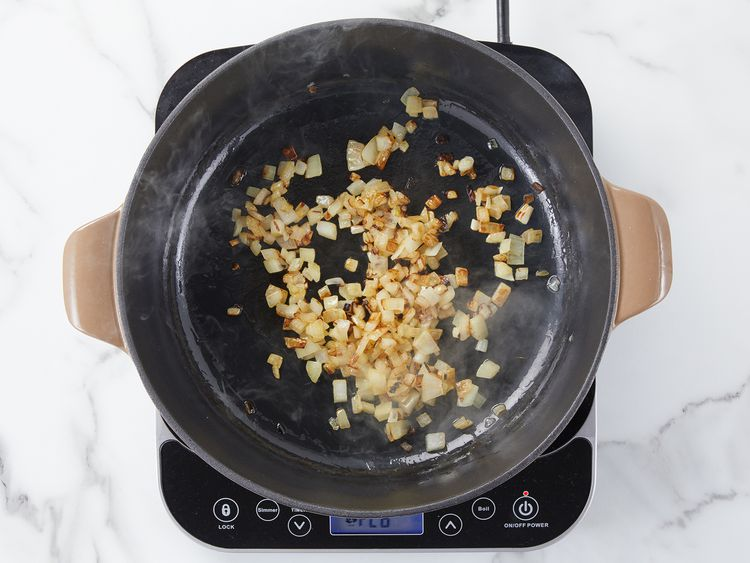
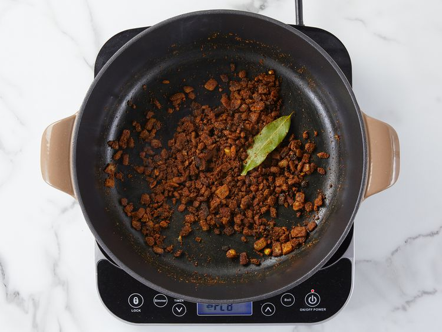
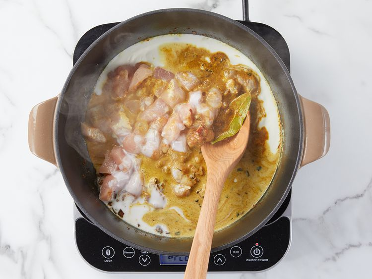
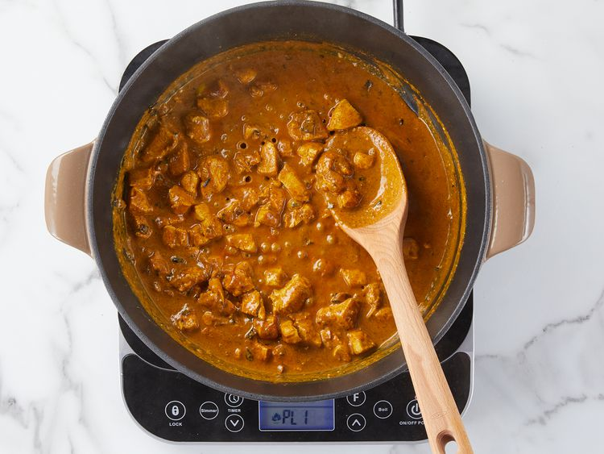

Indian Chicken Curry
How to Make Indian Chicken Curry
This Indian-inspired creamy chicken curry recipe is similar to a curry I had in India. The aromatic spices and flavors are a delight to the senses! Delicious with fresh naan and basmati rice.
Chicken curry from the Indian subcontinent typically features chicken stewed in a tomato-based sauce seasoned with aromatic spices. This recipe, like many others, calls for curry powder (a spice blend made with coriander, turmeric, cumin, and chili powder).
You'll find the full, step-by-step recipe below:
Ingredients
- 3 tablespoons olive oil
- 1 small onion, chopped
- 2 cloves garlic, minced
- 3 tablespoons curry powder
- 1 teaspoon ground cinnamon
- 1 teaspoon paprika
- 1 bay leaf
- ½ teaspoon grated fresh ginger root
- ½ teaspoon white sugar
- salt to taste
- 2 skinless, boneless chicken breast halves - cut into bite-size pieces
- 1 tablespoon tomato paste
- 1 cup plain yogurt
- ¾ cup coconut milk
- ½ lemon, juiced
- ½ teaspoon cayenne pepper
Steps
- Heat olive oil in a skillet over medium heat. Sauté onion until lightly browned. 
- Stir in garlic, curry powder, cinnamon, paprika, bay leaf, ginger, sugar, and salt. Continue stirring for 2 minutes. 
- Add chicken pieces, tomato paste, yogurt, and coconut milk. Bring to a boil, reduce heat, and simmer for 20 to 25 minutes. 
- Remove bay leaf, and stir in lemon juice and cayenne pepper. Simmer 5 more minutes. 
- Serve hot and enjoy!